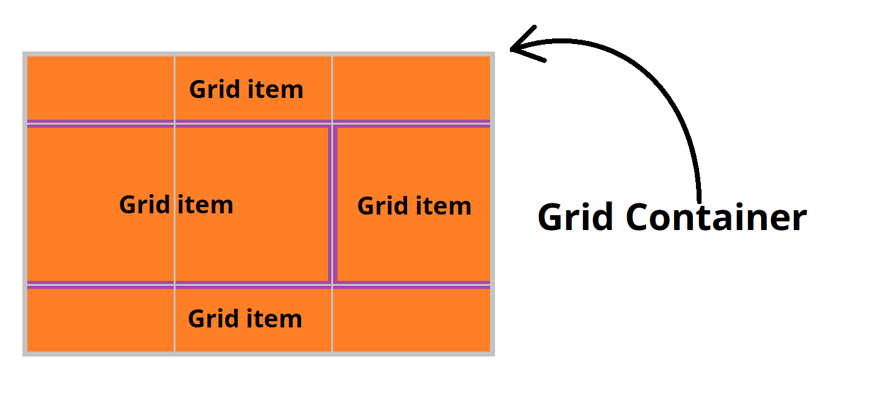
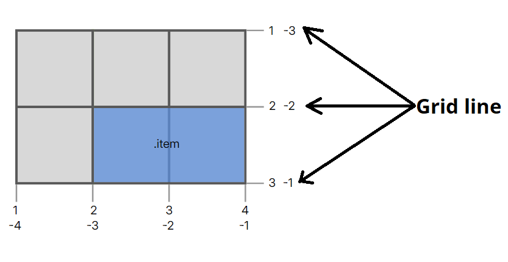
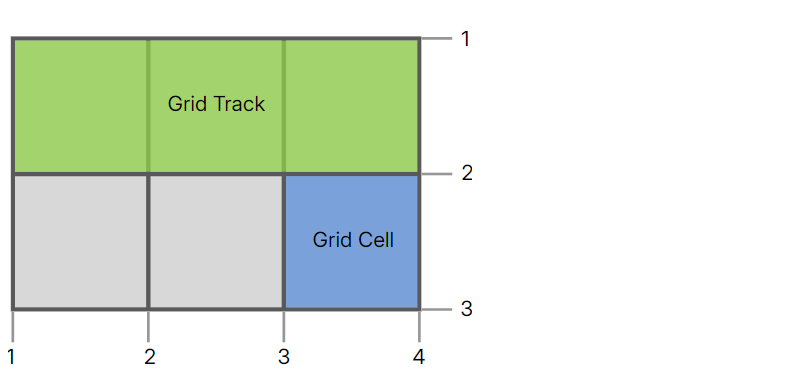
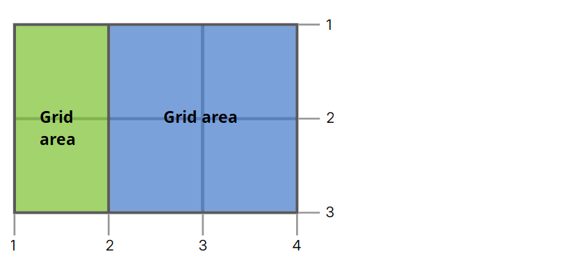

Topics we are going to learn in this page:
- Grid Introduction
- Terminologies for grid
display: grid;- Grid Properties
- grid-template-columns
- grid-template-rows
- grid-template (Shorthand)
- column-gap & row-gap
- gap (Shorthand)
- grid-column-start & grid-column-end
- grid-row-start & grid-row-end
- grid-column (Shorthand)
- grid-row (Shorthand)
- grid-area (Shorthand)
- grid-template-areas
- grid-auto-flow
- grid-auto-rows & grid-auto-columns
- Other cheat sheet & Practice
Explantion of the topics:
-
Grid Introduction:
- CSS Grid is a two-dimensional layout system created specifically to tackle grid-based user interfaces on the web.
- Grid vs Flexbox: Flexbox is more useful when we have to align items along a one-dimentional (1D) line (Row or Column). Grid is more useful when we have align the items along two-dimentional (2D) axis (Row & Column).
-
Terminologies for flexbox:
- Grid-Container or Grid-Parent: The HTML element that has "
display: grid" set on it is called the grid-container or grid-parent. - Grid-Item or Grid-Child: The items(HTML elements) inside the grid container are called grid items. 
- Grid lines: Grid lines are the horizontal and vertical lines that form the basis of the grid structure. They are used to position items on the grid. We can refer to them by numerical index, which starts at 1. 
- Grid Cell: A grid cell is the space between 2 adjacent row grid lines and 2 adjacent column grid lines.It’s a single “unit” of the grid.
- Grid track: A grid track is the space between 2 adjacent grid lines. They are the grid-rows and grid-columns. We can separate grid tracks with gutters, using the
grid-row-gapandgrid-column-gapproperties.

- Grid area: A grid area is one or more grid cells that make up a rectangular area on the grid. Grid areas are created when we place an item using line-based placement or when defining areas using named grid areas. 

- Grid-Container or Grid-Parent: The HTML element that has "
-
display: grid;display: grid;make an element a grid container. It enables all its direct children for grid properties.- All the direct children (grid-items) of the grid container arranged according to the grid layout, their default
inlineorblocknature does not work. display: grid;This makes the grid container behave like a block-level element. The grid-container takes up the entire available width of its parent element.display: inline-grid;This makes the grid-container behave like an inline-level element. This allows other inline elements to flow alongside it.
-
Grid Properties:
- Grid Container Properties: (We apply these properties on the grid container, and not on its items.)
- grid-template-columns
- grid-template-rows
- grid-template-areas
- grid-template (Shorthand for above i, ii, iii)
- column-gap
- row-gap
- gap (Shorthand for above v, vi)
- grid-auto-flow
- grid-auto-columns
- grid-auto-rows Above 10 properites are exolaned in this page
- justify-items
- align-items
- place-items
- justify-content
- align-content
- place-content
- grid (Shorthand for above i, ii, iii, viii, ix, x)

- Grid Item Properties: (We apply these properties to individual grid items.)
- grid-column-start
- grid-column-end
- grid-row-start
- grid-row-end
- grid-column (Shorthand for i, ii)
- grid-row (Shorthand for iii, iv)
- grid-area (Shorthand for v, vi) Above 7 properites are exolaned in this page
- justify-self
- align-self
- place-self
- Grid Container Properties: (We apply these properties on the grid container, and not on its items.)
-
grid-template-columns property (grid-container property):
- The
grid-template-columnsCSS property defines the column-track width and line names of the grid columns. - It can take multiple space seperated values, to divide the available width of the container into multiple column widths.
- Values can be:
- fr unit: fr means fraction. This value divide the available space into fractional ratio. Example:
grid-template-columns: 1fr 2fr 1fr; - Percentage: Similar to fr units this percentage value divide the available space. Example:
grid-template-columns: 25% 50% 25%; - Fixed value: Divide the available space according to the fixed size. The problem with the fixed size value is that they are not responsive.
Example:grid-template-columns: 100px 200px 100px; - repeat():
This CSS function allows us to avoid repetitive code when defining multiple rows or columns with similar sizes. It makes our CSS more concise and easier to maintain.
This function takes 2 parameters - number-of-repetition & a grid-template value.
We can useauto-fill&auto-fitkeyword as 1st parameter for automatcally deciding the number-of-repetition according to the width or height of the container.
auto-fill vs auto-fit
Example 1:grid-template-columns: repeat(3, 1fr);
Example 2:grid-template-columns: repeat(auto-fill, minmax(200px, 1fr)); - minmax():
This CSS function defines a size range for grid track greater than or equal to min and less than or equal to max.
It takes 2 parameters- 1st is minimum value & 2nd is maximum value.
Example:grid-template-columns: minmax(100px, 1fr);This example sets columns to a minimum width of 100px and a maximum width of 1fr. - fit-content():
This CSS function allows you to create grid tracks that adjust their size to fit the content inside them, but with a specified maximum width or height.
This CSS function takes 1 grid-template value as parameter.
Example:grid-template-columns: fit-content(300px) fit-content(300px) 1fr;
- fr unit: fr means fraction. This value divide the available space into fractional ratio. Example:
- We can combine different types of grid-template values together
- Syntax:
.container { display: grid; grid-template-columns: 1fr 200px 2fr auto; } - Example 1: Go
- Example 2: fit-content() Go
- The
-
grid-template-rows property (grid-container property):
- The
grid-template-rowsCSS property defines the row-track height and line names of the grid rows. - It can take multiple space seperated values, to divide the available height of the container into multiple row heights.
- Values can be: (Similar to the values of
grid-template-columns)- fr unit: Example:
grid-template-rows: 1fr 2fr 1fr; - Percentage: Example:
grid-template-rows: 25% 50% 25%; - Fixed value: Example:
grid-template-rows: 100px 200px 100px; - repeat():
Example 1:grid-template-rows: repeat(3, 1fr);
Example 2:grid-template-rows: repeat(auto-fill, minmax(200px, 1fr)); - minmax(): Example:
grid-template-rows: minmax(100px, 1fr);This example sets grid-rows to a minimum height of 100px and a maximum height of 1fr. - fit-content(): Example:
grid-template-rows: fit-content(300px) fit-content(300px) 1fr;
- fr unit: Example:
- We can combine different types of grid-template values together
- Syntax:
.container { display: grid; grid-template-rows: 1fr 200px 2fr auto; } - Example : Go
- The
-
grid-template property (grid-container property):
- The
grid-templateCSS property is a shorthand property for defininggrid-template-columns,grid-template-rowsandgrid-template-areas. - It takes grid-template-columns values & grid-template-rows values seperated by a "forward slash" ( / ) symbol.
- Values are similar to the values of
grid-template-columns, grid-template-rows & grid-template-areas. - Syntax:
.container { display: grid; grid-template: row values / column values; } - Example : Go
- The
-
column-gap & row-gap property (grid-container property):
- The
column-gapproperty specifies the gap (space) between the grid columns (column tracks). - The
row-gapproperty specifies the gap (space) between the grid rows (row tracks). - Gaps are only created in between columns and rows, and not along the edge of the grid container
- Values can be fixed size unit value or percentage(%) value.
- Syntax:
.container { display: grid; grid-template: 1fr 1fr / 1fr 1fr 1fr; column-gap: 10px; row-gap: 10px; } - Example (column-gap):
- Example (row-gap):
- The
-
gap shorthand property:(grid-container property)
- The
gapCSS property is a shorthand property forrow-gap&column-gap - It can take 1 or 2 values:
- Single value:
row-gap&column-gapwill habe the same value - Double value: 1st value specifies the
row-gap& 2nd value specifies thecolumn-gap. 2 values are seperated by a space.
- Single value:
- Syntax:
.container { display: grid; grid-template: 1fr 1fr / 1fr 1fr 1fr; gap: 20px 10px; } - Demo: Go
- The
-
grid-column-start & grid-column-end property (grid-items property):
- The
grid-column-startproperty defines on which column-line the item will start. - The
grid-column-endproperty defines how many columns an item will span, or on which column-line the item will end - Values can be line-number, line-name or span value.
- span: This value is used to specify how many grid-cells to marge into 1 grid item.
Example:grid-column-end: span 2;This example means, the grid item will occupy 2 column-tracks form its starting line. - Syntax:
.item1 { grid-column-start: 2; grid-column-end: 4; } - Demo: Go
- The
-
grid-row-start & grid-row-end property (grid-items property):
- The
grid-row-startproperty defines on which row-line the item will start. - The
grid-row-endproperty defines how many rows an item will span, or on which row-line the item will end - Values can be line-number, line-name or span value.
- span: This value is used to specify how many grid-cells to marge into 1 grid item.
Example:grid-row-end: span 2;This example means, the grid item will occupy 2 row-tracks form its starting line. - Syntax:
.item1 { grid-row-start: 2; grid-row-end: 4; } - Demo: Go
- The
-
grid-column shorthand property (grid-items property):
- This property is a shorthand for the following 2 CSS properties:
grid-column-start&grid-column-end - It can take 1 or 2 values:
- Single value: Only
grid-column-startvalue - Double value: 1st value specifies the
grid-column-start& 2nd value specifies thegrid-column-end. 2 values are seperated by a '/' (forward slash) symbol.
- Single value: Only
- Syntax:
.item1 { grid-column: 2 / 4; } - Demo: Go
- This property is a shorthand for the following 2 CSS properties:
-
grid-row shorthand property (grid-items property):
- This property is a shorthand for the following 2 CSS properties:
grid-row-start&grid-row-end - It can take 1 or 2 values:
- Single value: Only
grid-row-startvalue - Double value: 1st value specifies the
grid-row-start& 2nd value specifies thegrid-row-end. 2 values are seperated by a '/' (forward slash) symbol.
- Single value: Only
- Syntax:
.item1 { grid-row: 2 / 4; } - Demo: Go
- This property is a shorthand for the following 2 CSS properties:
-
grid-area shorthand property (grid-items property):
- This property is a shorthand for the following CSS properties:
- The
grid-areaproperty can also be used to assign a name to a grid item. Named grid items can then be referenced to by thegrid-template-areasproperty of the grid container. - Syntax:
.item1 { grid-area: row-start / column-start / row-end / column-end; } - Demo: Go
-
grid-template-areas property:(grid-container property)
- The
grid-template-areasCSS property specifies named grid areas, establishing the cells in the grid and assigning them names. - This type of grid-template is visually understandable.
- We can use this named cell as the value of
grid-areafor easily adjusting grid-item's size. - We can use
grid-template-areasalong withgrid-template-rows&grid-template-columns. Thegrid-template-rows&grid-template-columnsfor sizing andgrid-template-areasfor assigning names to the grid-cells. - Syntax:
.container { display: grid; grid-template-areas: "nav nav" "main main" "foot foot"; } .item1{ grid-area: nav; } .item2{ grid-area: main; } .item3{ grid-area: foot; } - Demo: Go
- The
-
grid-auto-flow property (grid-container property):
- The
grid-auto-flowCSS property used to control the arrangement of the grid-items. - Values can be:
row: Default value. Places grid-items by filling each row, adding new rows as necessary.column: Places grid-items by filling each column, adding new columns as necessary.dense: When combined withroworcolumn, this value makes the grid layout "dense". This means that the auto-placement algorithm will try to fill in gaps in the grid with grid-items that can fit, rather than leaving them empty.
- Syntax:
.container { display: grid; grid-template: repeat(4, 1fr)/repeat(4, 1fr); grid-auto-flow: column; } - Demo: Go
- The
-
grid-auto-rows & grid-auto-columns property:(grid-container property)
- These 2 properties are useful when some grid-items does not fit into the grid-template or when some grid-items are dynamically created, to set the size of the grid-items.
grid-auto-rows: Sets the height of the extra grid-row-track.grid-auto-columns: Sets the width of the extra grid-column-track.- Values are similar to the values of
grid-template-columns, grid-template-rows & grid-template-areas. - Syntax:
.container { display: grid; grid-template: repeat(4, 1fr)/repeat(4, 1fr); grid-auto-rows: 50px; } - Demo: Go
-
Other cheat sheet & Practice :
- CSS-Tricks CSS Grid Layout Guide
- codrops
- Grid Garden